MSc in Electrical and Electronic Engineering
Independent University, Bangladesh
I'm Raafiu Ashiquzzaman Mahmood — an Electrical and Electronic Engineering graduate currently pursuing an MSc in the same field. I’m passionate about embedded systems, IoT, circuit design, and simulation, and I enjoy using Python to solve practical engineering challenges.
Independent University, Bangladesh
Independent University, Bangladesh
St. Peter’s School of London
St. Peter’s School of London
Startup Bangladesh Limited
Key responsibilities and contributions:
Versatile
Conducted mock examinations under conditions designed to replicate official Pearson Edexcel IGCSE and International A Level (IAL) examination halls.
15 engineering and software projects spanning smart grids, embedded electronics, power systems, PCB design, robotics and AI-assisted development. Original project photographs, schematics and screenshots are shown below.
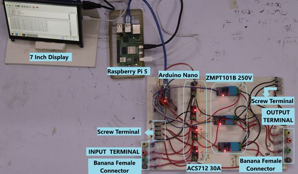
Designed and implemented a low-cost IoT-based distribution line fault detection system using Raspberry Pi, Arduino, and voltage and current sensors. The project employed Discrete Wavelet Transform (DWT) analysis in MATLAB/Simulink to identify short-circuit faults by comparing wavelet detail coefficients against predefined thresholds. A hardware prototype was developed to acquire electrical measurements and support IoT-based monitoring, integrating signal processing with embedded hardware. The system demonstrated an inexpensive approach to distribution line fault detection, contributing toward smarter and more accessible electrical grid monitoring solutions.
Read related publication ↗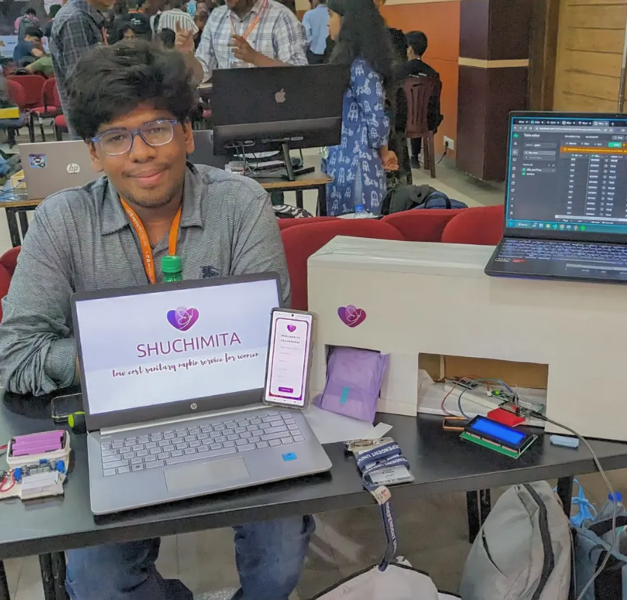
Designed and developed an RFID-based sanitary napkin vending machine to assist female students at Independent University, Bangladesh (IUB) during emergencies by providing convenient access to sanitary products. The system uses student ID cards for RFID authentication to activate the dispensing mechanism. Built using an ESP32, Arduino, motor, motor driver, and spring-based dispensing mechanism, the machine features both a primary electrical supply and battery backup with automatic power-source switching to support operation during outages.
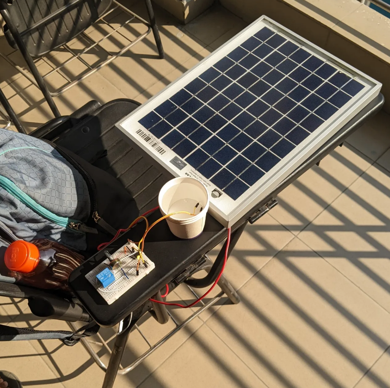
Designed and developed a solar-powered automatic water pump system using an LM741 operational amplifier configured as a voltage comparator. The system utilizes the electrical conductivity of mineral-containing water to detect the water level through two sensing electrodes. Upon water contact, the comparator output changes state, triggering a relay to disconnect the water pump and prevent overflow. Powered by a 12V solar panel, the system reduces dependence on grid electricity, with the potential for battery integration to enable energy storage and operation during low sunlight conditions.
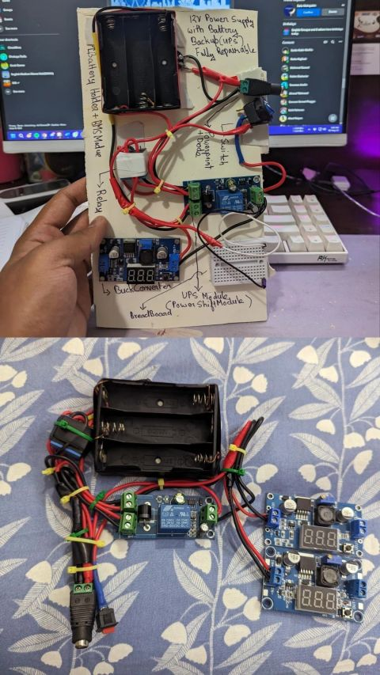
Designed and assembled a 12V DC backup power supply system as both an experimental learning platform and a functional subsystem for the Shuchimita V2 sanitary napkin vending machine. The system incorporates a battery backup, DC power regulation modules, and an automatic switching relay to transfer the load between the primary power supply and backup source during power interruptions. The project provided practical experience in power management, relay-based switching, circuit integration, and developing a reusable backup power solution for embedded electronic applications.
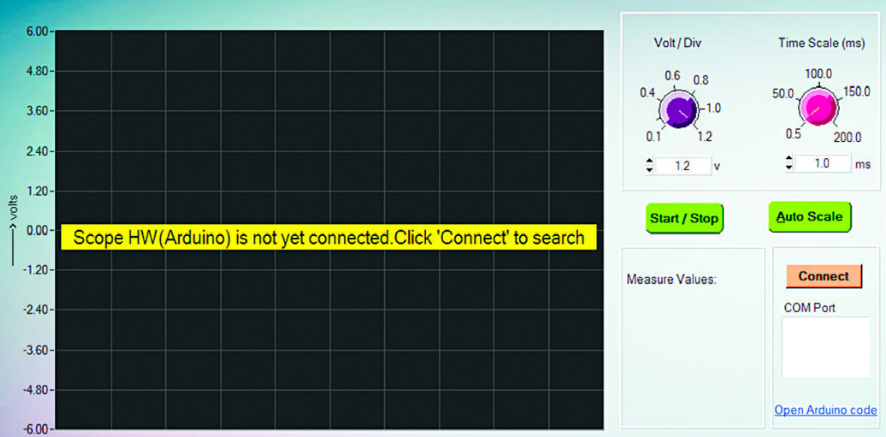
Built a basic Arduino-based oscilloscope using an open-source circuit design as a personal electronics experiment driven by curiosity. The project utilizes an Arduino Uno R3, resistors, and two diodes to create a simple signal acquisition circuit connected to a computer-based oscilloscope interface. The Arduino serves as the data acquisition unit, allowing supported voltage signals to be sampled and displayed through software. This project provided practical exposure to analog signal measurement, Arduino programming, and the fundamentals of digital oscilloscopes.
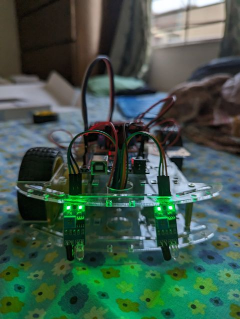
Built an Arduino-based line-following robot using infrared (IR) sensors to detect and follow a predefined path autonomously. The system uses an Arduino microcontroller to process sensor readings and control the DC motors through a motor driver, allowing the robot to adjust its movement according to the detected line. This project provided practical experience in sensor integration, embedded programming, motor control, and basic autonomous robotic navigation using simple electronic components.
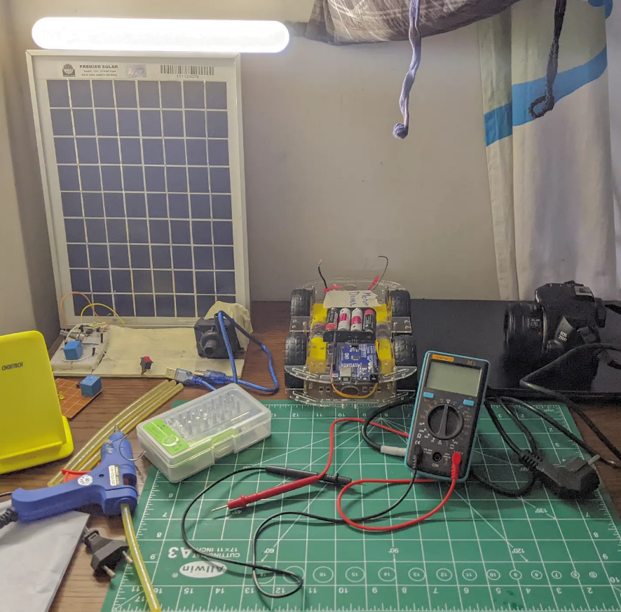
Built an Arduino-based remote-controlled car using a Bluetooth communication module for wireless operation. The system uses an Arduino microcontroller to receive control commands through Bluetooth and operate the DC motors via a motor driver, enabling forward, reverse, and directional movement. The project involved assembling the robotic chassis, integrating electronic components, and implementing basic wireless motor control. It provided practical experience in embedded programming, Bluetooth communication, circuit assembly, and the fundamentals of remotely operated robotic systems.
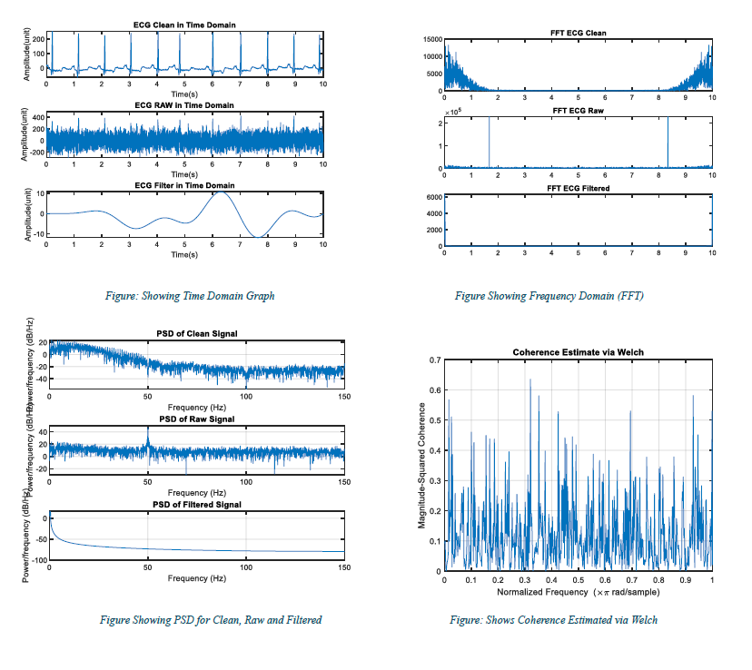
Designed and evaluated digital filters in MATLAB to reduce noise and artifacts in electrocardiogram (ECG) signals while preserving essential physiological information. Initially explored FIR filtering before comparing multiple filter designs based on signal quality and computational requirements. A Chebyshev Type I IIR filter was selected for its superior performance, achieving a signal-to-noise ratio (SNR) above 16 dB, improved root mean square error (RMSE), and a lower filter order compared to alternative designs, making it more suitable for potential hardware implementation.
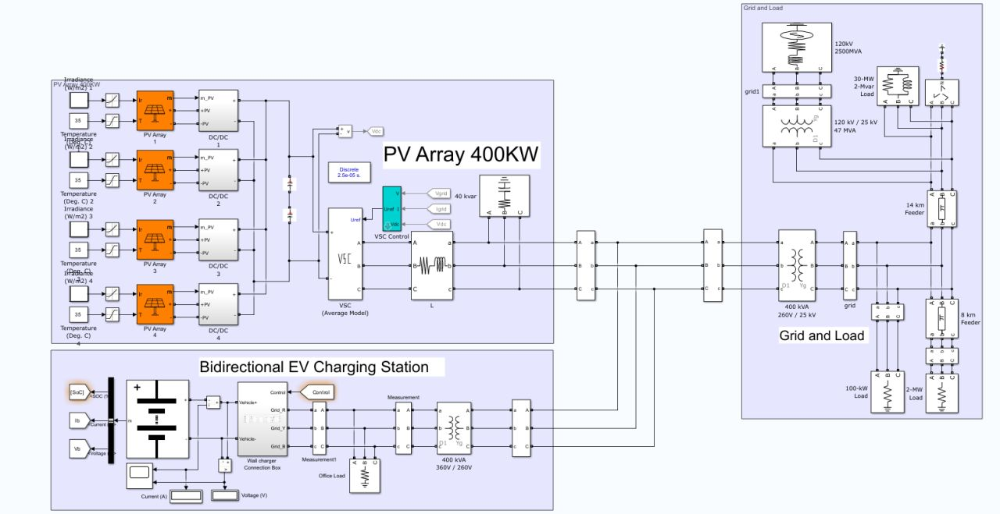
Developed a MATLAB/Simulink simulation model integrating a 400 kW solar photovoltaic (PV) system with a bidirectional electric vehicle (EV) charging station and an electrical distribution grid. The model incorporates PV arrays, DC-DC converters, voltage-source converter control, and a bidirectional charging interface to investigate renewable energy integration and Vehicle-to-Grid (V2G) operation. The project explores how solar generation and bidirectional EV charging can support energy exchange between vehicles and the electrical grid, providing practical experience in power system modeling and simulation.
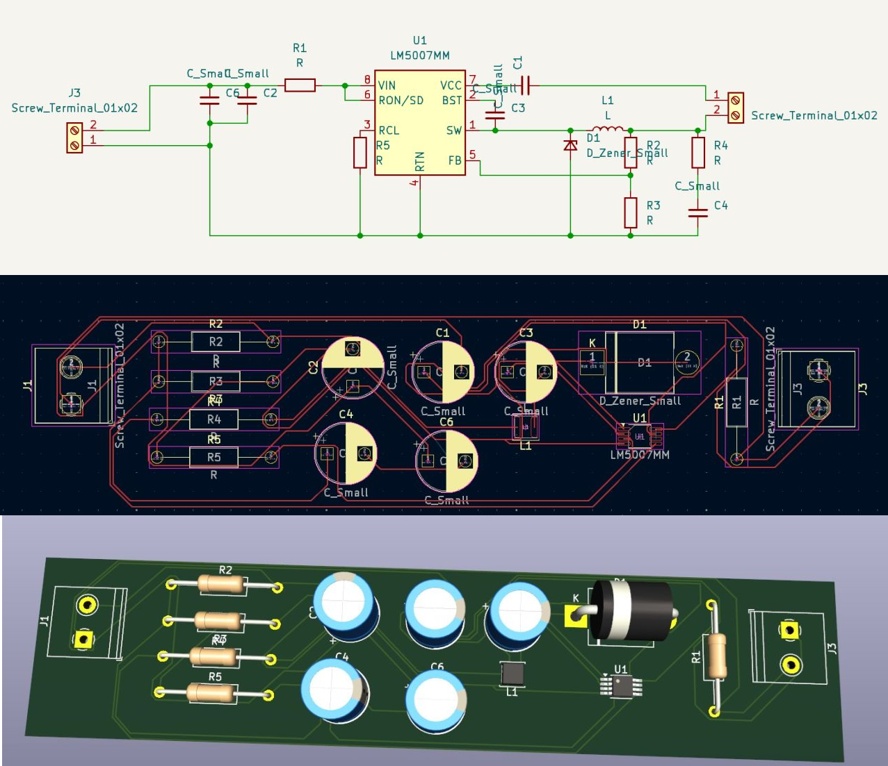
Designed a single-layer printed circuit board (PCB) for a buck converter using KiCad as a personal electronics design exercise. Working from an existing online reference schematic, the project involved schematic capture, component placement, PCB layout, and copper trace routing, followed by 3D visualization of the assembled board. The exercise provided practical experience with KiCad’s electronic design tools while exploring PCB layout techniques, component footprints, and routing considerations. It also served as an opportunity to further develop PCB design skills through independent learning and experimentation.
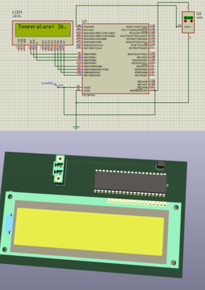
Designed a PIC microcontroller-based temperature monitoring and automatic fan control system as part of an academic project. The circuit uses a temperature sensor to monitor ambient temperature, displays readings on an LCD, and controls a cooling fan based on temperature conditions. Beyond the original course requirements, independently extended the project by developing a single-layer PCB layout using KiCad. This involved component placement, footprint selection, and circuit routing, providing additional hands-on experience in microcontroller interfacing, circuit simulation, and PCB design.
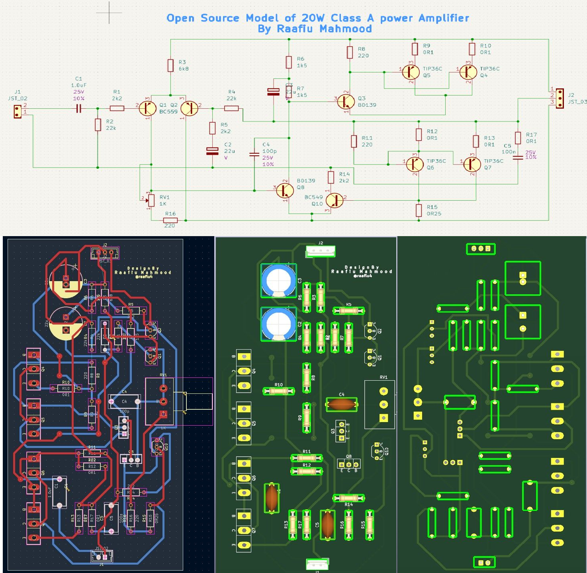
Designed a two-layer PCB for a 20W Class A audio power amplifier using KiCad, based on an open-source circuit schematic. The project focused on component placement, copper trace routing, grounding considerations, and PCB layout optimization for analog audio applications. Moving beyond previous single-layer designs, this exercise explored the importance of noise reduction, signal integrity, and thermal management in power amplifier circuits. The PCB design remains under refinement, with physical fabrication and hardware testing planned to evaluate its performance.
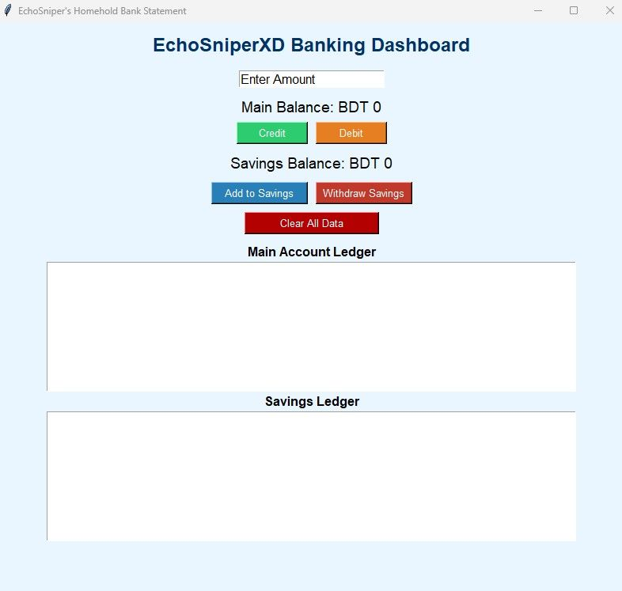
Developed a Python-based desktop application to track household finances while strengthening programming skills through independent practice and AI-assisted development. Initially started with handwritten Python code before incorporating ChatGPT to assist with debugging, feature development, and CSV-based data persistence. The application features a graphical user interface for recording credits, debits, savings deposits, and withdrawals, alongside separate transaction ledgers and balance tracking. This personal learning project provided practical experience in Python programming, file handling, GUI development, and iterative software improvement.
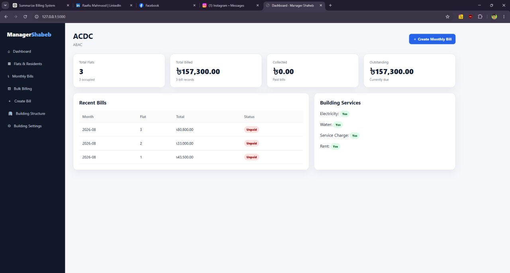
Developed a locally hosted residential management and billing application using Python, Flask, HTML, CSS, and JavaScript with AI-assisted development through ChatGPT. The system is designed to simplify building administration, resident records, monthly rent, utility charges, and payment tracking through an intuitive dashboard. Features include individual and bulk billing, outstanding balance monitoring, historical records, and CSV-based data storage. The project focuses on reducing manual bookkeeping errors and improving accessibility for users with basic computer skills, with further usability testing and refinement planned.
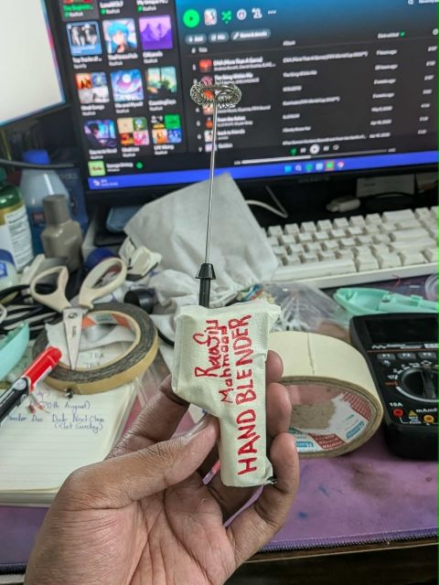
Repaired and modified a faulty battery-powered handheld blender as a personal electronics project. After inspecting its internal components, identified a defective DC motor, corroded battery contacts, and a malfunctioning switch. Reworked the assembly to accommodate a replacement motor and integrated a USB Type-C power module, enabling operation through either a battery or an external USB-C power source. The project provided practical experience in fault diagnosis, component replacement, circuit modification, and improving the functionality of everyday electronic devices through hands-on experimentation.
Recognition for engineering ideas and project showcases.
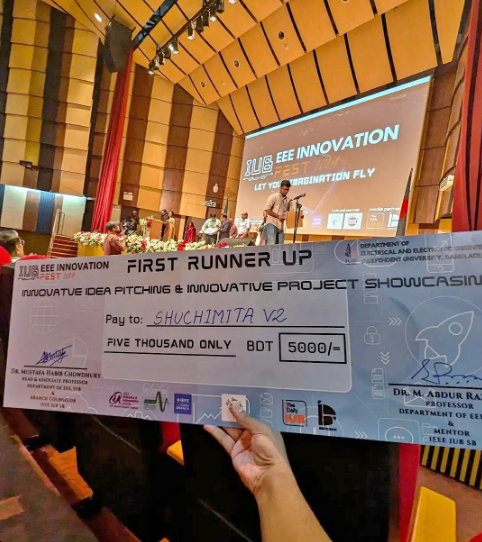
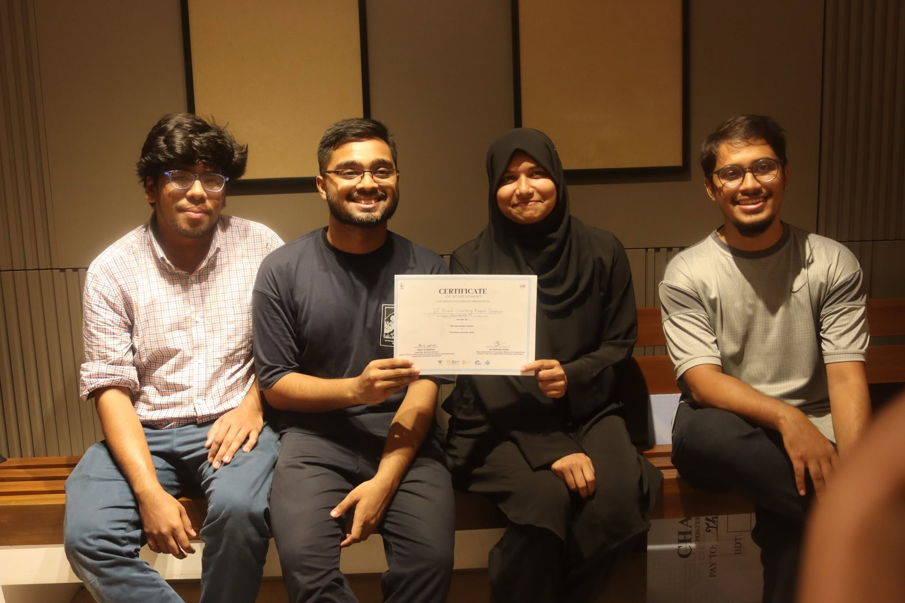
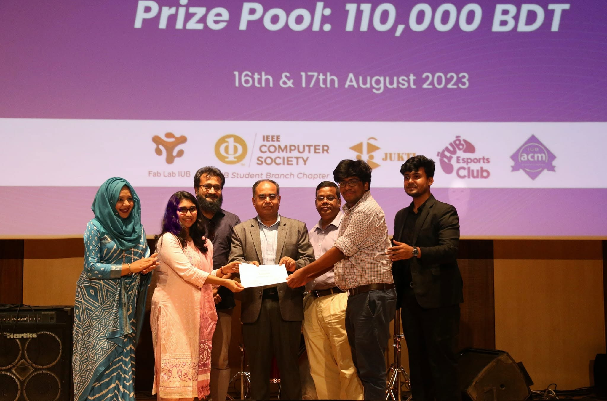
Raafiu Ashiquzzaman Mahmood, Taremun Arefin, Md Roman Khan, Salma Islam Mim & Dr. Shahriar Khan. International IoT, Electronics and Mechatronics Conference 2025 – Cognitive Systems.
View publication DOI ↗Extracurricular leadership at IEEE IUB Robotics & Automation Society.
IEEE IUB Robotics & Automation Society (RAS)
IEEE IUB Robotics & Automation Society (RAS)
Technical certification
Cisco training
Technical training
Open to professional opportunities in electrical and electronic engineering, embedded systems, IoT and related technology roles.